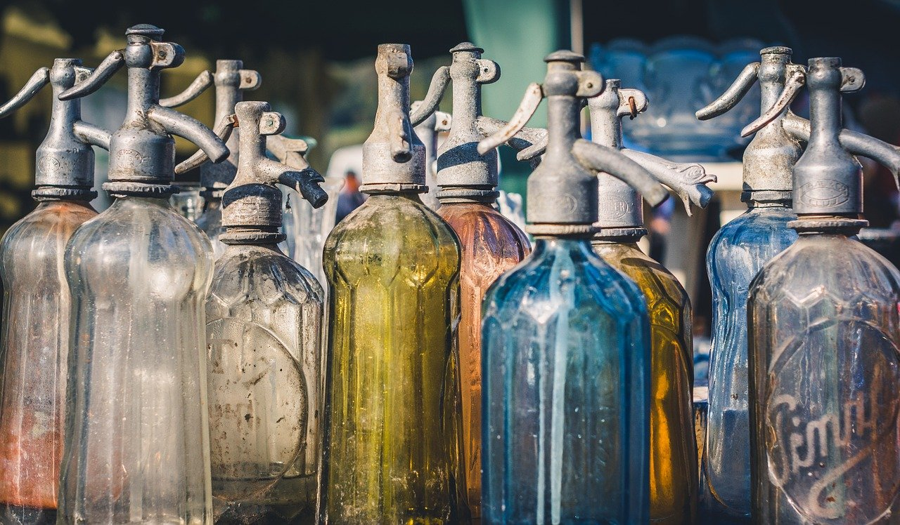

Usuarios
Agosto/01/2021
(10) Comentarios
¿Qué es el Estilo Vintage? Todo lo que debes saber de un estilo que cambió la Historia
¿De dónde proviene el estilo vintage? Este estilo comenzó a principios del siglo XX, pero empezó a coger más fuerza en el XXI. Respecto al término, vintage no es lo mismo que retro. Hay algunos matices que los diferencian, como hemos explicado en alguna otra ocasión. Lo vintage implica que pertenece a otra época y lo retro es algo inspirado en una estética antigua, pero no tiene por qué ser antiguo. Normalmente hace referencia a piezas de calidad que fueron creadas hace veinte o treinta años, e incluso más.